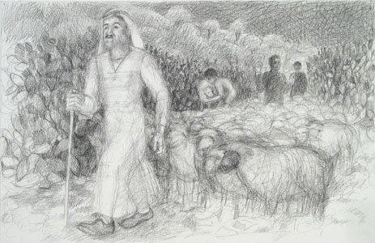
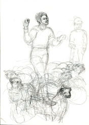
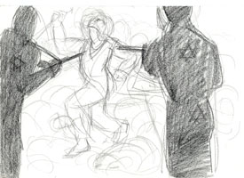
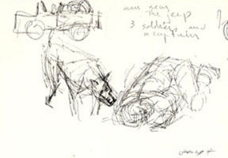

| Introduction |
| The Massacre |
| Northern Fields |
| Inside the Village |
| First Wave |
| Second Wave |
| Third Wave |
| Fourth Wave |
| Sixth |
| Seventh |
| Ninth |
| Roster of Victims |
| Witnesses |
| Artist's Notes |
| Contact me |
| Exit |
MEMORIAL on the 50th Anniversary of the Kafr Qasem Massacre
Those Who Were Killed in the Northern Fields
I drew Ibrahim Isaa as I envisioned him just before the moment of his death. He was 35 years of age and a handsome man judging by his photograph which I emulated here. Witnesses said that he was leading the family flock assisted by three boys. Some say that he was sent to the fields to quickly bring the boys home who were then watering the flock and knew nothing of the impending curfew.* They were returning through the narrow dirt road which passed through olive orchard and which was lined on both sides with cactus fencing. Suddenly, they were confronted by Israeli border police shooting at them.

This is one of the early sketches showing the boy Abdallah Isaa who was 15 years old and was using the traditional method of throwing little stones to keep the flock moving in the right direction. The other boys were Abed Isaa, 9 years, and Sami Isaa.

The four members of the Isaa family were almost home when the Israeli border police opened fire and shot Ihrahime Isaa in the head. When the shooting stopped, the two boys, Abdallah and Sami Isaa, were left dead. Sami, who was in the rear of the flock, survived and was able to give details of the event. He relayed that he had turned back to get a straggling goat. When he heard the first shot, he spun around to see Ibrahime’s body in the air with his kufiyye falling behind him.

Sami then heard more shots. He saw Abdallah fall to the ground. Thus he also threw himself down to the ground as the goats provided protection. He saw soldiers moving westwards while shooting. He expected to die. In time the goats began to scatter and he was left exposed.

Suddenly he heard more shooting and heard Abdallah exclaiming: “Pain, my father, I am dying.” Then he heard more shots and the painful moaning stopped. He then heard Abed who was nine years old calling three times: “There is no diety but God” followed by silence.

The soldiers returned with a dog who ran off and was sniffing Sami; but Sami's presence was luckily not detected. The soldiers called the dog and it went to them and in the headlight of their jeep, Sami saw them throw the three lifeless bodies of his family into their jeep and leave.
Web posting and author: Samia A. Halaby,October 2006.
![[Art on the Net]](/images/artnet_button.gif)